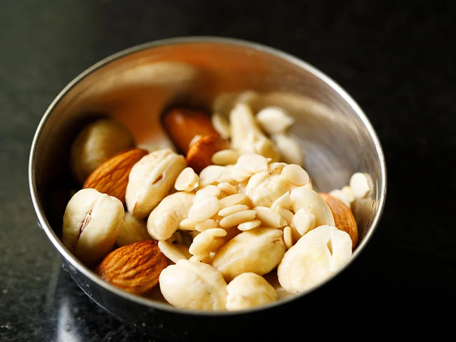
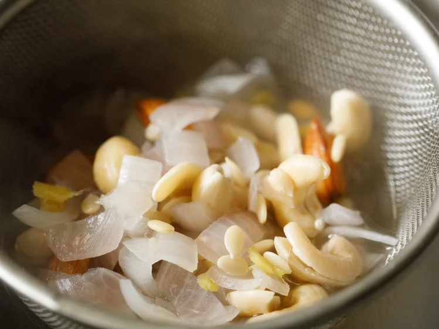
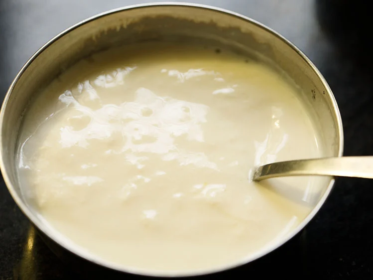
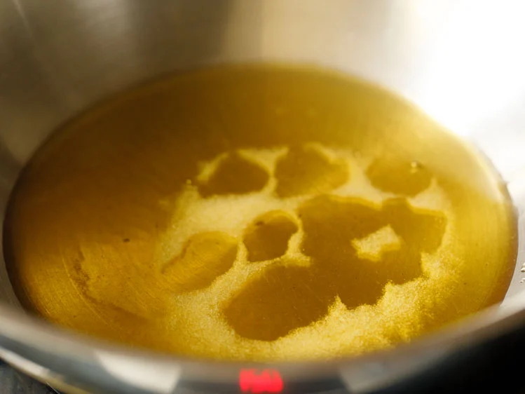
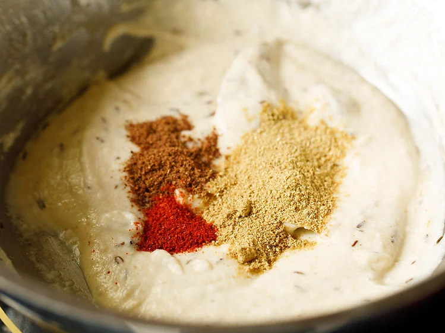
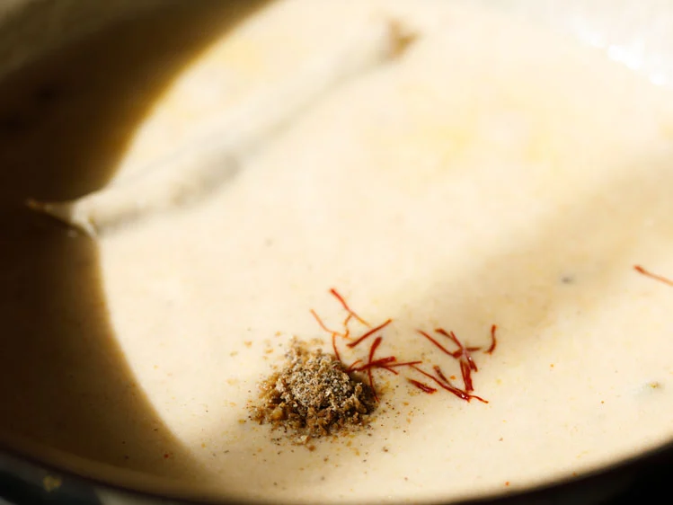
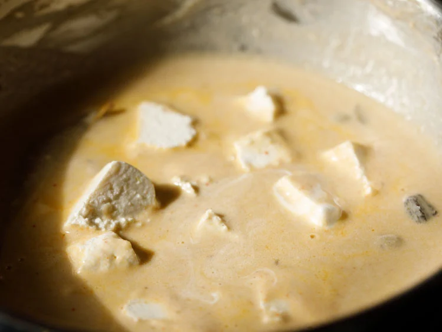
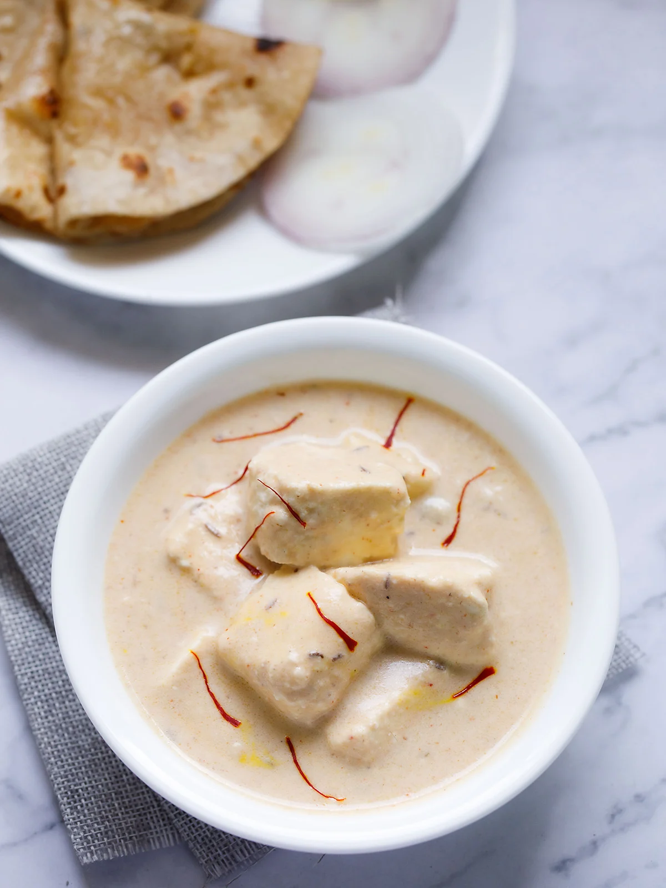

Shahi Paneer Recipe (Royal Paneer Dish)
Shahi Paneer recipe is a Mughlai style preparation where soft paneer cubes lie in a pool of creamy, rich, delicious gravy made of onions, nuts, seeds, yogurt and cream. Perfect for serving with naan or roti. It is a fact that Mughlai cuisine is know for its biryanis and meat based dishes. But it is also true that one of the most popular recipes from this food repertoire is a vegetarian dish, namely Shahi Paneer. The word ‘shahi’ is ‘royal or royalty’ in English.

About Shahi Paneer
Shahi Paneer is a rich and creamy North Indian curry known for its regal and indulgent flavors. Like I mentioned in the beginning, the term ‘shahi’ translates to ‘royal,’ indicating the dish’s opulence.
How to make Shahi Paneer
While the list of ingredients for Shahi Paneer recipe is quite long, you don’t need to be intimidated. The process for making this dish isn’t particularly technical or difficult.
Preparation
1. Take the nuts and seeds – 2 tablespoons cashews, 1 tablespoon almonds, 1 tablespoon melon seeds (magaz) in a bowl and rinse them a couple of times with water.
Drain all the water and set aside.
2. Simmer the below listed ingredients in 1.5 cup water for for 8 to 10 minutes on medium-low heat.
*½ cup chopped onions
*2 tablespoons cashews
*1 tablespoon almonds
*1 tablespoon melon seeds (magaz)
*½ teaspoon chopped ginger
*½ teaspoon chopped garlic
3. Continue to cook until the onions become soft, then strain some of the stock (the water in which the nuts, seeds, onions were cooked). Set this stock aside for later use.
4. When cooled, place the softened onions, nuts, seeds, ginger, garlic in a blender or grinder-mixer jar. You can peel the almonds if you prefer.
5. Make a fine paste of the cooked onion mixture, adding 2 to 4 tablespoons of the strained stock or as needed.
5. Make a fine paste of the cooked onion mixture, adding 2 to 4 tablespoons of the strained stock or as needed.
Sauté Onions & Nuts Paste
7. Heat 3 tablespoons ghee in a pan over medium-low to medium heat. Let the ghee melt. You can even use oil or butter in place of ghee.
9. Add the onion and nuts paste.
10. On a low to medium-low heat mix until the paste is uniform. Then sauté for 7 to 8 minutes or until the fat separates at the sides of the paste.
You will see that on further cooking the paste will thicken and become glossy. Keep stirring non-stop for even cooking. This will also prevent the paste getting burnt from the bottom.
11. Now add ½ teaspoon red chilli powder or cayenne pepper, ¼ teaspoon garam masala powder and 1 teaspoon coriander powder.
You could even replace red chilli powder with ¼ teaspoon white or black pepper powder. You could also use kashmiri red chilli powder.
12. Stir to mix well.
13. Reduce heat to a low or turn off the heat. Add the whisked yogurt, 1 to 1.5 cups of water, ½ to 1 teaspoon sugar and salt according to taste.
You can always alter the consistency of gravy by adding less or more water.
14. Stir well and simmer on a low heat for 10 to 12 minutes, or until the gravy thickens.
Make Shahi Paneer
16. Stir and add the paneer cubes (200 grams) and 1 tablespoon heavy cream. Add 1 teaspoon of kewra water and stir (optional step). If adding butter, you can add it here. Mix well and turn off the heat.
Preferably use homemade paneer for the best texture and softness. If using store-brought paneer or frozen paneer, follow the package instructions to thaw and use it.
17. Garnish with fresh coriander leaves or mint leaves or some saffron strands and enjoy with rice or flatbread.
Serving Suggestions
You can enjoy this creamy textured dish with Roti, or Naan and even paratha. You can also serve it with rice-based dishes like Jeera Rice, or Ghee Rice.